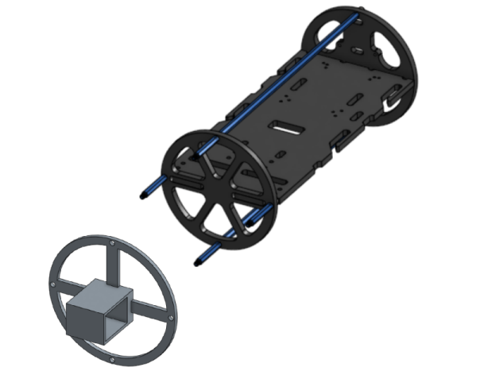
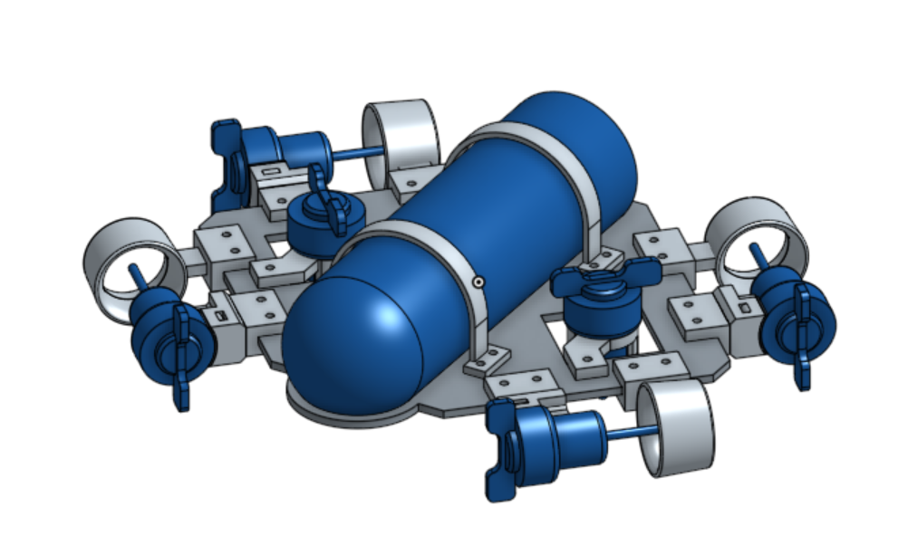

The Maret Engineering Team is Maret’s high school engineering team pursuing robotics competitions including MATE ROV and the National Robotics Competition (NRC). Prior to 2019, the Maret Engineering Team designed and built an underwater ROV platform capable of traversing a competition pool and performing via a live camera feed and on-board attachments. In 2019, the team transitioned to design and build a series of multipurpose wheeled robots for NRC objectives such as obstacle avoidance, combat, and object retrieval.


Team Lead:I designed in OnShape and 3D printed a camera and electronics mount which could interface with a glass cylinder, dome, and seals to maintain a watertight environment for the electronics underwater.As the team leader, I led the design and fabrication of two multipurpose robots from scratch as a platform for obstacle avoidance sensors, object retrieval attachments, and other modular components for the NRC.As the leader of the team following the conclusion of our 5+ year participation in MATE ROV, I oversaw the transition of the team to the NRC. This included the training of new members, the fabrication of two new robots from the ground up, the organization of competition deadlines and objectives, and the expansion of the team from roughly 12, to more than 30 members.